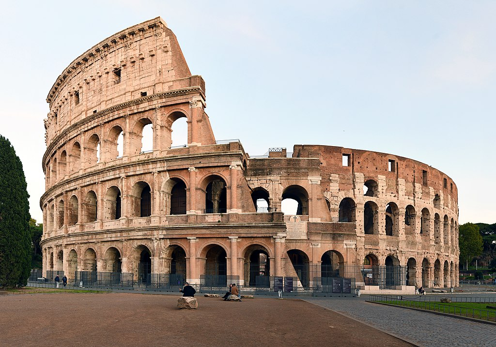

Le Colisée (Colosseo en italien), à l'origine amphithéâtre Flavien (amphitheatrum Flavium en latin), est un immense amphithéâtre ovoïde situé dans le centre de la ville de Rome, entre l'Esquilin et le Cælius, le plus grand jamais construit dans l'Empire romain. Il est l'une des plus grandes œuvres de l'architecture et de l'ingénierie (en) romaines. Témoignage monumental de la propagande flavienne, sa construction, juste à l'est du Forum Romain, a commencé entre 70 et 72 apr. J.-C., sous l'empereur Vespasien, et s'est achevée en 80 sous Titus. D'autres modifications ont ensuite été apportées au cours du règne de Domitien (81-96)2. Le nom d'amphithéâtre Flavien dérive du nom de famille (gens Flavii) de l'empereur Vespasien et ses fils Titus et Domitien. Pouvant accueillir probablement 50 000
COLISEE
HISTOIRE
spectateurs (les estimations plus anciennes de 80 000 spectateurs, soit un douzième de la population romaine, étant exagérées)3, le Colisée, témoin de l'évergétisme impérial, a été utilisé pour les venationes (combats d'animaux sauvages), les munera (combats de gladiateurs) et autres spectacles publics, tels que des exécutions de condamnés à mort, des reconstitutions de batailles célèbres et des drames basés sur la mythologie romaine. Il est resté en service pendant près de 500 ans, les derniers jeux se prolongeant jusqu'au VIe siècle. Pour l'inauguration du Colisée, en 80 apr. J.-C., Titus donne une naumachie dans le Colisée transformé en bassin reconstituant la bataille navale de Corinthe contre Corcyre. Le bâtiment a finalement cessé d'être utilisé au cours du haut Moyen Âge. Il a plus tard été réutilisé pour des usages variés tels que des habitations, des ateliers d'artisans, le siège d'un ordre religieux, une forteresse, une carrière et un sanctuaire catholique chrétien. Le Colisée est actuellement en état de ruine, en raison des dommages causés par les tremblements de terre (443, 508, 801, 847 et 1349) et la récupération des pierres, mais il continue à donner la mesure de l'ancienne puissance de la Rome Impériale. Aujourd'hui, il est l'un des symboles de la Rome moderne, une de ses attractions touristiques les plus populaires avec 7,6 millions de visiteurs, et a encore des liens étroits avec l'Église catholique romaine : chaque Vendredi saint, le pape mène une procession aux flambeaux sur un chemin de croix aboutissant à l'amphithéâtre. Le Colisée est représenté sur la pièce de monnaie italienne de 5 centimes d'euro.